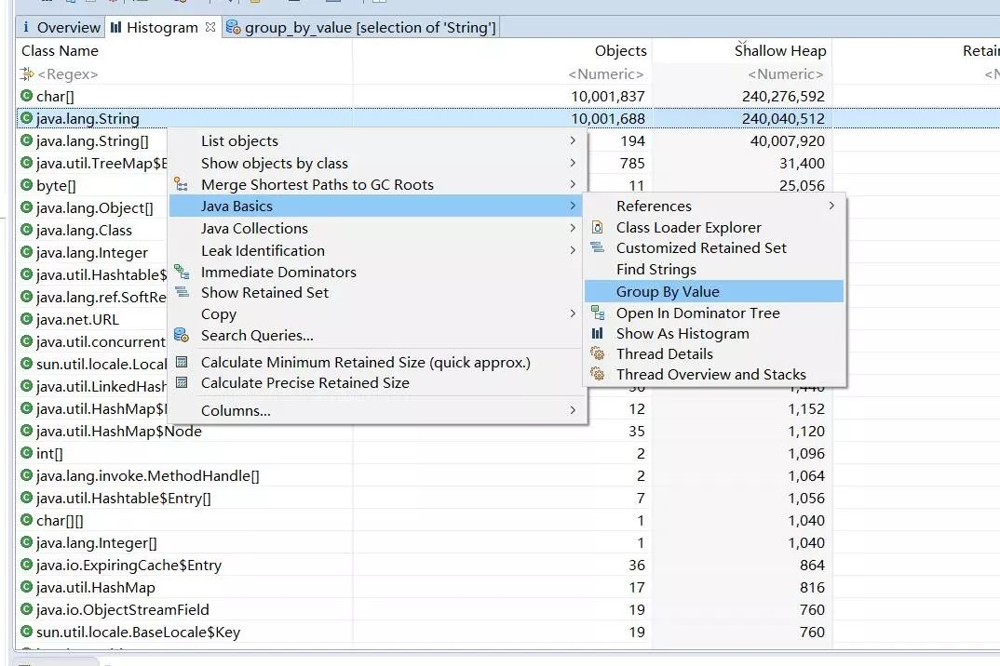
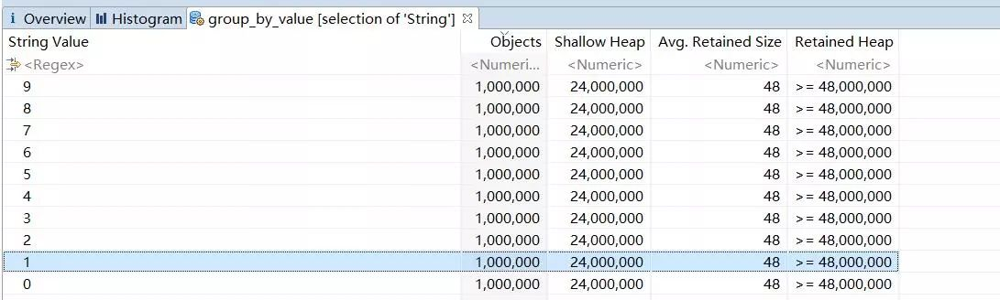
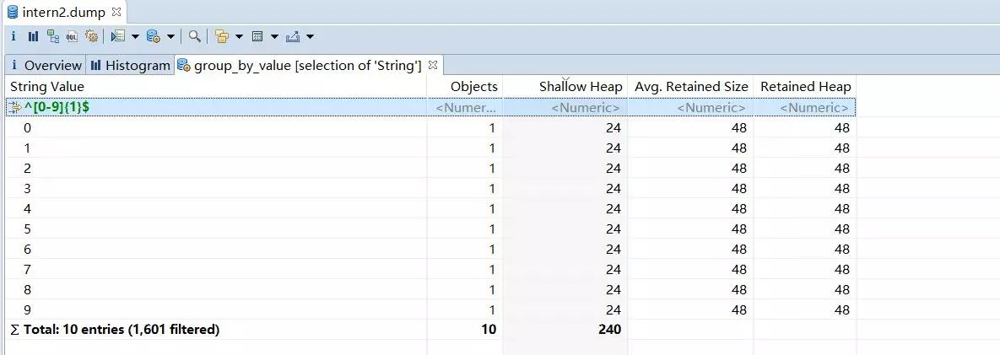

Java中的常量池,实际上分为两种形态:静态常量池和运行时常量池.
静态常量池,即*.class文件中的常量池,class文件中的常量池不仅仅包含字符串(数字)字面量，还包含类、方法的信息，占用class文件绝大部分空间.
运行时常量池,则是jvm虚拟机在完成类装载操作后,将class文件中的常量池载入到内存中,并保存在方法区中,我们常说的常量池,就是指方法区中的运行时常量池.
运行时常量池相对于Class文件常量池的另外一个重要特征是具备动态性,Java语言并不要求常量一定只有编译期才能产生,也就是并非预置入Class文件中常量池的内容才能进入方法区运行时常量池,运行期间也可能将新的常量放入池中,这种特性被开发人员利用比较多的就是String类的intern()方法.
看个例子
public static void main(String[] args) {
Integer aa = 127, bb = 127;
System.out.println(aa == bb); // true
String s1 = "abc";
String s2 = "abc";
String s3 = new String("abc");
String s4 = new String("abc");
String s5 = s4.intern();
System.out.println(s1 == s2); //true
System.out.println(s2 == s3); // false
System.out.println(s3 == s4); // false
System.out.println(s4 == s5); // false
System.out.println(s1 == s5); // true
}
其中aa和bb都是指向了常量池中的127.s1和s2指向的是常量池中的abc,而s3,s4指向的是堆中不同的值为abc字符串对象.而s4.intern()是返回指向常量池中值为abc的字符串对象.所以结果如代码中注释所示.
在实际的编程中,常量池似乎是没什么用.其实不尽然.应用的堆中到处都是字符串.如果有大部分的字符串都是相同的,那很大一部分空间都是浪费的.因为字符串是不可变,所以对于同样的字符序列,我们没有理由存储多个字符串.
intern 内存对比
我们先做一个内存对比.
public static void main(String[] args) throws Exception {
Object lock = new Object();
int total = 10000000;
String[] s = new String[total];
long timeWatcher = System.currentTimeMillis();
for(int i = 0 ;i < total ; i++){
//s[i] = new String(String.valueOf(i%10)).intern();
s[i] = new String(String.valueOf(i%10));
}
System.out.println(System.currentTimeMillis() - timeWatcher);
synchronized (lock) {
while (true)
lock.wait();
}
}
动态创建一千万个字符串,字符串是0-9的个位数值,重复度比较高.不使用intern和使用intern分别使用 jmap dump出full gc后的内存镜像.

使用MAT分析一下字符串的内容,直接group by value 能够看到各个字符串值的对象数和占用的内存

不使用intern [0-9]的字符串占用了很多的内存.因为数组里面引用的是堆里面新增的字符串.那么也就是1000w个字符串每个值占用了48M的内存.

而使用了intern后的则是很少,[0-9]的字符串分别都是只有一个对象,每个值只占用了48 bytes.
至于时间性能上的损耗,使用了intern比不使用多出了500ms,我们可以大致理解为是1000w次intern所消耗的时间.
intern 性能对比
intern额外的时间性能并不是在都是这么好的.上面的例子是只有10个字符串值.我们来看一个极端的情况,假设所有字符串都不是重复的.那么intern会有什么样的效果.测试代码改成如下
public static void main(String[] args) throws Exception {
Object lock = new Object();
int total = 10000000;
String[] s = new String[total];
long timeWatcher = System.currentTimeMillis();
for(int i = 0 ;i < total ; i++){
s[i] = new String(String.valueOf(i)).intern();
}
System.out.println(System.currentTimeMillis() - timeWatcher);
synchronized (lock) {
while (true)
lock.wait();
}
}
我们使用同样的方法进行分析,full gc 后,s数组占用的内存其实和没有使用intern的情况是一样的.因为字符串的值没有重复.所以即使把字符串从堆移动到常量池.它还是一样多.但是它所使用的时间却多达42秒.性能急剧下降.这是由于常量池的存储结构决定的.
常量池结构
字符串常量池是固定大小的Hashtable组成的,它本质上是一个固定长度的数组上面挂着链表,数组是固定长度,保留的常量字符串越多,可能hash冲突就越多.访问某个元素的时间就越高.增加JVM参数 -XX:+PrintStringTableStatistics 可以在程序结束时打印出相关的统计.
SymbolTable statistics:
Number of buckets : 20011 = 160088 bytes, avg 8.000
Number of entries : 11274 = 270576 bytes, avg 24.000
Number of literals : 11274 = 496136 bytes, avg 44.007
Total footprint : = 926800 bytes
Average bucket size : 0.563
Variance of bucket size : 0.565
Std. dev. of bucket size: 0.752
Maximum bucket size : 5
StringTable statistics:
Number of buckets : 60013 = 480104 bytes, avg 8.000
Number of entries : 10001467 = 240035208 bytes, avg 24.000
Number of literals : 10001467 = 560059224 bytes, avg 55.998
Total footprint : = 800574536 bytes
Average bucket size : 166.655
Variance of bucket size : 55.348
Std. dev. of bucket size: 7.440
Maximum bucket size : 196
上面意味着有60013 个hash桶. 平均每个hash桶上面有166.655个元素,也就是链表的长度.在保留字符串比较多的情况下,如果需要提升时间性能可以适当调高hash桶的个数.同样是上面的例子,启动参数增加 -XX:StringTableSize=1000000 把hash桶的个数调高到100w,时间从42秒降低到3.7秒.
终上,intern方法能够有效地减少重复字符串的内存占用,重复度比较低的情况下收效甚微.intern方法的性能取决于字符串常量池的Hashtable大小的调优程度.